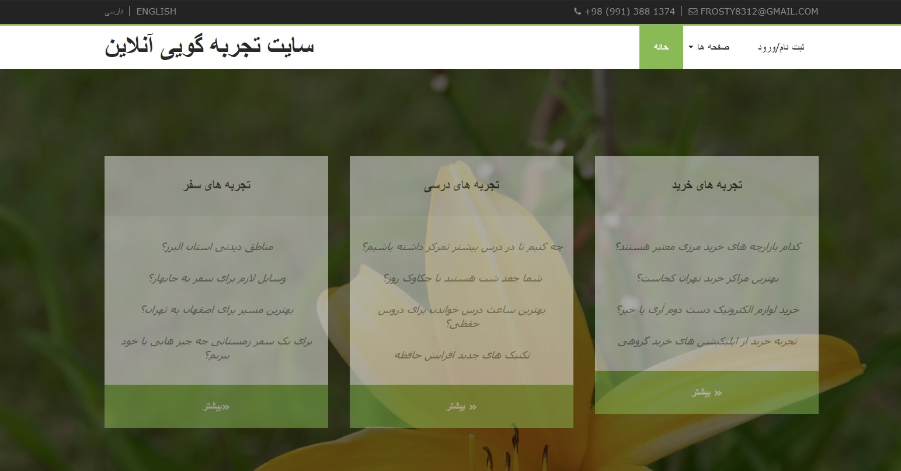
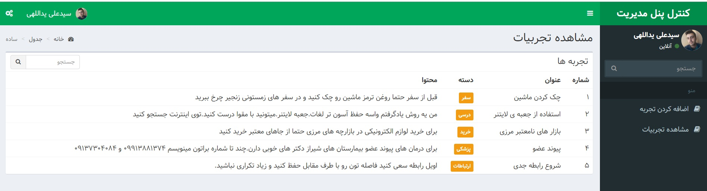

سایت تجربه گویی آنلاین یک سایت برای اشتراک تجربیات با دیگران و استفاده از تجربیات دیگران است.کاربران در این سایت عضو شده و می توانند در پنل کاربری خود تجربیات خود را دسته های مختلف ثبت کنند
برای مشاهده تجربیات دیگران نیاز به ثبت نام نیست و در صفحه ی اصلی سایت قابل مشاهده است اما برای ثبت تجربه باید عضو سایت بود
در تصویر زیر نمای صفحه ی اصلی سایت را مشاهده می کنید
پس از ورود پنل کاربری جدای از تنظیماتی مثل رنگ پنل و پیام های خوانده نشده و لیست کارهایی که کاربر برای انجام ذخیره کرده و یادآوری ها در منوی کشویی سمت راست دو گزینه ی اضافه کردن تجربه و مشاهده ی تجربیات وجود دارد
در تصویر زیر قسمت افزودن تجربه را مشاهده می کنید که برای هر تجربه عنوان، دسته و متن تجربه وجود دارد
داده های ذخیره شده ی تجربه در دیتابیس ذخیره می شوند
MYSQl دیتابیس به کار رفته
قسمت دیگری که در پنل کاربری داریم مشاهده ی تجربیات است که دسته تجربیات ، متن و عنوان را در قالب یک جدول به کاربر نشان می دهد
در تصویر زیر عکس این قسمت را نیر مشاهده می کنیم
